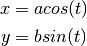
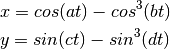

Se pide realizar un script que dibuje la gráfica de la función sin() en el intervalo [-pi, pi] con línea de color azul de dos puntos de grueso. Se añadirán al gráfico un título y etiquetas para los ejes x e y.
Las ecuaciones paramétricas de una elipse de semiejes a y b, centrada en el origen de coordenadas son:

Se pide desarrollar una función que reciba como argumentos los valores de a y de b y que dibuje la gráfica de la elipse con la línea de color rojo y 3 puntos de gruesa.
function plotellipse(a,b)
% Dibuja la elipse de semiejes a y b centrada en el origen
t = [-pi:0.1:pi+0.1];
x = a * cos(t);
y = b * sin(t);
plot(x,y,'r', 'linewidth',3)
end
Dada la función:

Se pide desarrollar una función que reciba como argumentos a, b, c, d y dibuje el gráfico de la función. Pruébese la función para los juegos de valores [1,80,1,80], [80,1,80,1], [80,1,1,80] y [1,100,1,50]. Nota: Se debe utilizar un número elevado de puntos para obtener una buena gráfica, del orden de cien mil puntos.
function plot1(a,b,c,d)
t=linspace(-pi,pi,1e6);
x = cos(a*t) - cos(b*t).^3;
y = sin(c*t) - sin(d*t).^3;
plot(x,y)
title(sprintf('a=%d b=%d c=%d d=%d', a,b,c,d));
end
Desarrolle una función denominada polyplot(p) que reciba un polinomio como argumento y lo plotee en el intervalo comprendido entre la menor de las raices menos uno y uno más la mayor de las raices. El título del gráfico será el polinomio desarrollado. Si el polinomio no tiene raices, el programa escribirá en pantalla un mensaje que muestre el polinomio e informe de la inexistencia de raices.
function polyplot(p)
% Representa el polinomio p en el intervalo comprendido entre sus raices
r = roots(p);
if length(r) == 0
polyout(p,'X')
fprinf("No tiene raices\n")
return;
end
maxr = max(r);
minr = min(r);
x = linspace(minr-1, maxr+1,100);
y = polyval(p, x);
plot(x,y,"-r", "linewidth", 2);
hold on;
y2 = zeros(1,100);
plot(x,y2);
title(sprintf('%s',polyout(p,'x')));
hold off
end